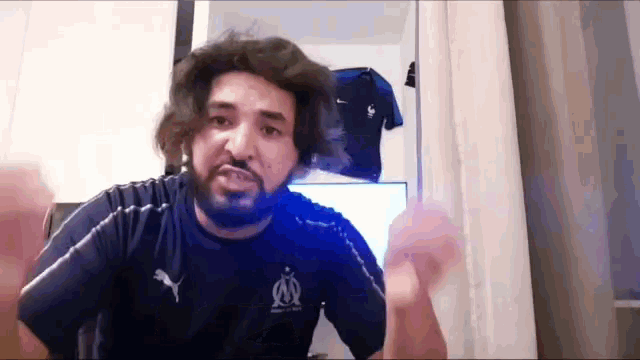
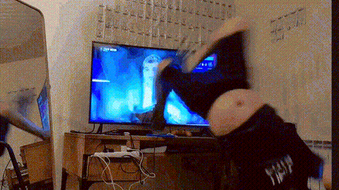
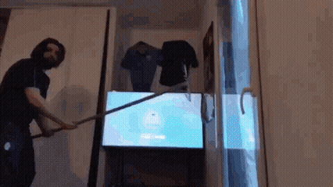

Le high kick
Quand Momo balance son fameux high kick, c'est une claque de cinéma : un saut, un coup sec qui fait vibrer
la pièce, et la télé part en morceaux d'image comme si quelqu'un avait éteint la réalité. La dalle pète en
une pluie de pixels, pas de poussière, juste des éclairs d'écran qui s'éparpillent, l'image se fissure en
étoiles, le son se coupe net. C'est sec, violent et presque élégant : un coup de pied qui transforme l'écran
en feu d'artifice raté, et toute la salle qui pousse un « oh » entre le rire et la stupeur.

La roulade
La roulade, c'est la version acrobatique : Momo glisse, roule, arrive comme une tornade et la télé subit
l'impact en mode cartoon. Là, ça craque en onde, l'écran se déchire en vignettes qui sautent hors du cadre,
les couleurs se diluent et partent en vrille, comme un vieux film qui s'effrite. C'est moins frontal qu'un
coup, plus chaotique, on sent le mouvement, le souffle, la pièce qui tangue un instant. La chute est
théâtrale : on rit parce que c'est absurde, parce que ça part en sucette de la meilleure des façons.

Le râteau
Avec le râteau, Momo joue le maître de cérémonie : il lève l'objet, fait monter la tension, et le geste
descend comme une sentence. Le bruit est profond, rugueux, l'écran se plie en une onde, puis se rompt en un
craquement sale, comme si on froissait un papier glacé. Les images se désagrègent en lambeaux, le son se
transforme en grésillement, et la scène prend une tournure presque rituelle. C'est brutal sans fioriture,
c'est la clôture d'un spectacle : tout retombe, tout le monde commente, et la caméra imaginaire coupe sur un
plan de comédie noire.